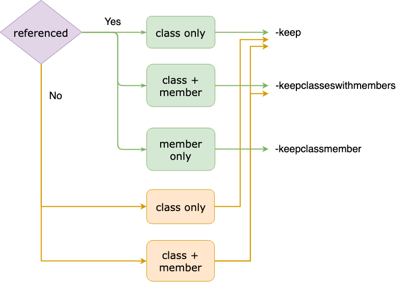

了解ProGuard運作後，接著就是要實際應用。以下是歷經分析和調整專案ProGuard設定的過程中，得到的ㄧ些使用ProGuard設定的概念、歸納，和一些相關探討。
Keep規則的介紹和使用方式，可以查看Android分類中的ProGuard章節，或是直接看官方文件。
Concept
Keep rule is reference
在使用ProGuard的過程中，會遇過符合keep規則的類別，在程式執行階段都沒有被使用，到最後依然會留下來。但keep只是指定不要被改名，所以沒被使用應是會被刪除。
原因很簡單：keep設定也算是一種引用。如果透過-whyareyoukeeping來讓ProGuard告訴你被keep的原因，會得到如下提示：
is kept by a directive in the configuration. |
所以如果是使用第三方library，在使用keep時要注意，是否會在無意間留住library內沒設定keep的類別，卻在你這邊keep住了。
這邊提供另外兩個較為直覺的作法，可以避免此類狀況：
- 加上
allowshrinking。可以給予被刪除的彈性。 - 使用
-keepnames。任何keep設定加上names，都等於加上allowshrinking。
Multiple layer extension
當keep住一個有繼承其他類別的子類時，可以發現其父類也會被keep，並且一路向上整串都被keep。當這種情況發生時，根據實作方式不同可以透過-whyareyoukeeping看到以下兩種訊息。
- 子類實作沒有參數，如預設的constructor，或沒有任何constructor時是：
is invoked by |
這是因為預設的constructor會呼叫父類的constructor。
- 子類實作有參數的constructor時是：
is extended by |
Method reference is entendable
前面都是從類別的層級出發，至於函示呢？依照通用的邏輯，即使類別最後沒被刪除，函示在沒使用到的狀況下，也依舊會被刪除。
但繼承Library class的類別則不同，假設現在有個繼承View的類別：
public class CustomView extends View { |
如果此類別沒被刪除，則所有覆寫View的函式都會被留下，而且不會被改名：
// In mapping.txt |
這是因為library class不會被ProGuard處理，所以繼承的類別如果被留下，其中的函式會遵循和library class相同的規則。
Keep Stretage
說了這麼多，依照目前所得的結果，可以歸納出以下簡易的規則，來判斷當前的類別或函示是否會被刪除或改名。如果程式執行階段會直接引用到的，就只要看Ofuscate的部分。
Class
| keep | No keep | |
|---|---|---|
| Shrink | X，keep算是引用 | △，沒子類會；有子類，則子類有keep就不會 |
| Obfuscate | X | O |
Method
如果類別被留下，符合keep規則的函示，則一樣不能被刪和改名。
如果沒有被keep，則分成program class和library class：
| Program class | Library class (no @Override) | Library class (with @Override) | |
|---|---|---|---|
| Shrink | O | O | X |
| Obfuscate | O | O | X |
Refinement Strategy
如果是想要調整現有的規則，卻又擔心是否會搞壞原本的設定，可以先將keep規則換成-whyareyoukeeping，再加上-printconfiduration來觀察被keep的原因。
以下是個範例：
com.example.background.Blur |
這表示Blur被keep的原因是：
- Blur在SelectImageActivity有被引用。
- SelectImageActivity會因aapt_rule.txt的規則keep住。
- Activity是library class，所以
Activity.onCreate()不會被處理。依照前面提到的觀念，這代表SelectImageActivity.onCreate()也不會被處理。
結果就是，即使Blur被宣告後沒使用，也會因為引用它的SelectImageActivity有被keep，且繼承了library class而被留下。
除了以上狀況，還有以下幾種可能的訊息：
- is kept by a directive in the configuration.
- is a library class.
- is a library field.
不管是上面哪種，解讀方式都一樣。在原先的-keep已經被-whyareyoukeeping取代的狀況下，這些訊息依然出現，代表被keep是由其他原因導致；當前規則是多餘的，可直接移除。
如果出現的是以下訊息：
- is not been kept.
那需要回頭看程式邏輯，確認原本keep的內容是否真的需要。
如果是沒有任何訊息，代表本身就是多餘的，程式執行階段根本沒用到，或是屬於映射等非直接引用的方式；相同的這需要回頭看程式邏輯確認。
Decision tree
除了-keep，ProGuard還有提供功能類似但功能不太一樣的兩種keep。
-keepwithmember <class name> { <members name> }：如果指定的類別有在Shrink階段被留下，則會留下指定的member。-keepclasseswithmembers <class name> { <members name> }：效果等同-keep，不同的是其需要類別和member都符合才會有作用。
綜觀三種，以下提供一個簡單的決策樹，可以更快的決定要使用哪種：

首先要判斷是否在程式中有直接引用，這裡指的是reference，而不是Reflection的引用：
- 是：單純再決定需要保留的範圍。
- 否：理應會在Shrink階段後被刪除，除非用了
-keep，因為根據前面介紹，-keep也算是一種引用。而另一個-keepclasseswithmembers需滿足條件時才等同-keep；可把其看成-keep加上-keepclassmember。
依照Keep規則的設計不同，也可能不同類型keep最後結果相同。建議同時參考官方文件來寫出最簡潔的規則。